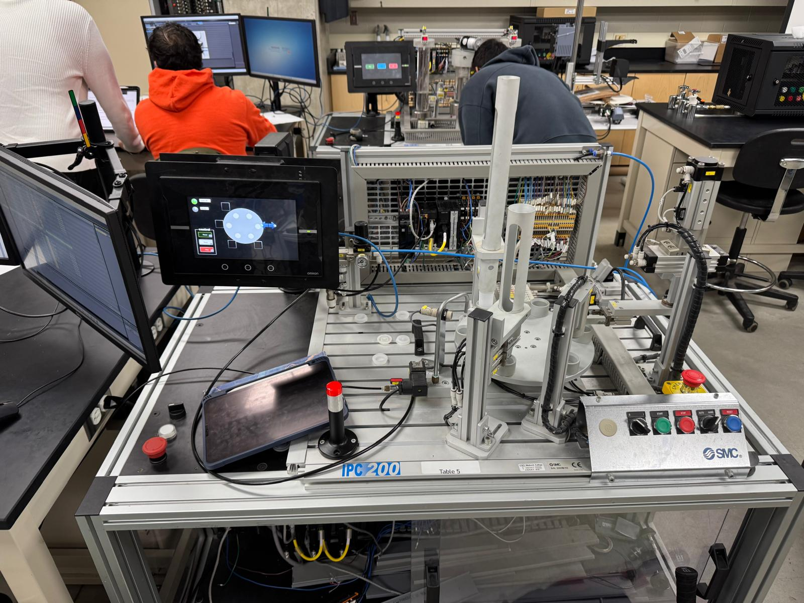

Working in a team of three, designed and commissioned the IPC-202A Bottling Station (Gravity Feeder) — a subsystem of the SMC IPC-200 Industrial Process Control training system at McMaster University. The project involved installing, wiring, and programming a complete automated bottling process that simulates real industrial fill-and-cap production lines used in food and beverage manufacturing.
The station automates the full bottle lifecycle: feeding bottles via gravity, filling with liquid, placing lids, and transferring bottles downstream — all controlled through an Omron PLC with a custom-built operator HMI. The project provided hands-on experience with PLC programming, pneumatic systems, safety interlock design, alarm logic, and inter-station communication.

Omron NX/NJ-series PLC programmed in Sysmac Studio using Ladder Diagram (LD) and Structured Text (ST) for sequence control, interlock logic, and alarm management.
Full operator interface built in Omron HMI software — real-time status, alarm banners with fault codes, Auto/Manual mode toggle, production counters, and manual actuator override screens.
Coordinated four pneumatic actuators (feeder release, fill cylinder, lid placement, indexing plate) with tuned timing to achieve smooth, repeatable bottle handling across all operating cycles.
Hardwired E-stop circuits and software interlocks prevent unsafe actuator sequences. All safety logic was tested with forced fault conditions to verify correct system response under failure modes.
Delivered a fully functional, dual-mode industrial bottling station with complete I/O commissioning, safety interlock logic, alarm management, and a professional operator HMI — all validated through structured system testing. The station ran reliably through all test cycles with zero interlock failures, and the HMI provided operators with clear visibility into system state, active alarms, and production counts. The project directly demonstrated team-based industrial installation, PLC programming, pneumatic system integration, and operator interface design at a production-grade standard.